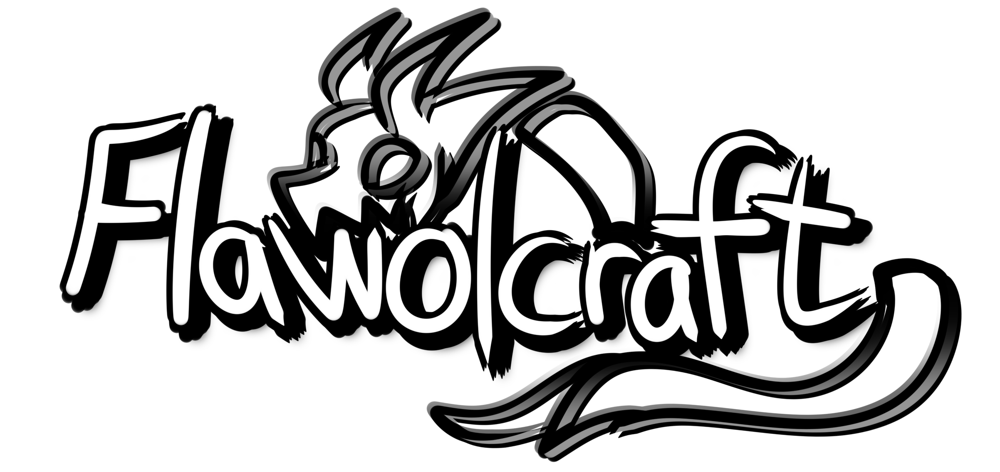

FlawolCraft information
Home
Rules
YouTube
How do I join FlawolCraft?
To join FlawolCraft, open the Minecraft launcher and launch
Minecraft Java Edition
and then, select version
1.21.1
, then when the game has launched click "Multiplayer" Accept the checkbox that you may get, and then click "Add Server" Give the server a name such as FlawolCraft and for the adress, type in
play.flawolcraft.net
What are some commands that you can use to help you in game?
/wild & /rtp
: Randomly teleport yourself away from spawn. Use /spawn to head back.
/spawn
: Teleports you back to the server's spawn.
/tpa <player>
: Sends a teleport request to the specified player.
/tpaccept
: Accepts a teleport request from another player.
/kit
: Get basic stone tools with /kit default and a claim shovel with
/kit
claim.
/msg <player> <message>
: Sends a private message to another player.
/home
: Teleports you to your home location.
/sethome
: Set your current location as your home. Return here later with
/home
.
/warp <warpname>
: Warps you to different locations. Used in events.